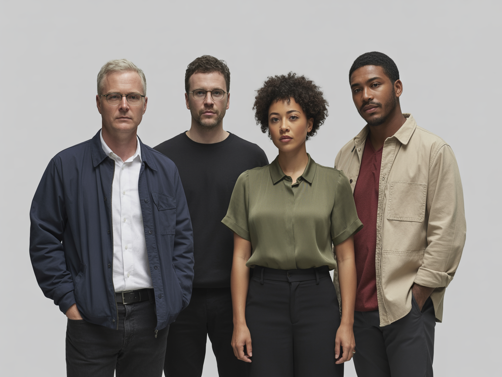
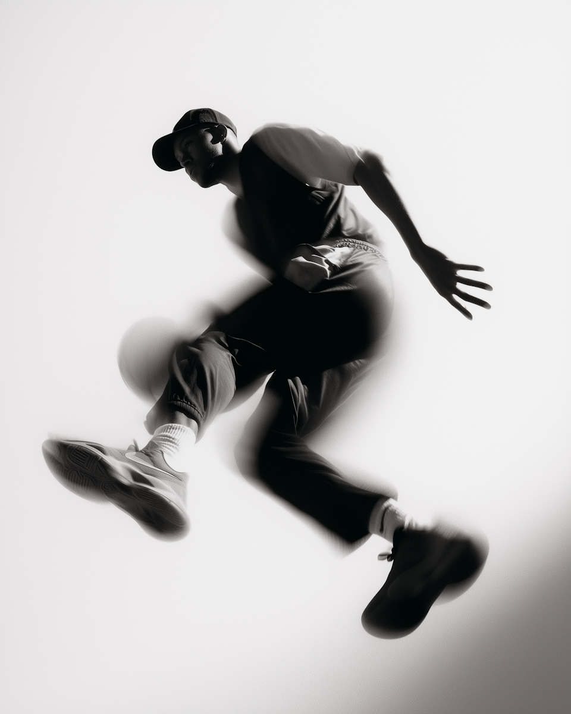

We are Hive®
Hive is a logo design agency crafting timeless, versatile identities that help businesses stand out and grow.

From idea to launch: how we gave Nextdock a bold identity.
We worked with Nextdock from their earliest sketches, creating a logo that reflects speed and innovation. The new identity helped them attract early adopters and secure their first round of investment.
NextdockRebranding success: transforming a legacy brand for modern markets.
A complete visual overhaul that maintained brand heritage while appealing to contemporary audiences. The new identity system helped them attract new customers and increase brand recognition significantly.

From concept to market: how we built a timeless brand identity.
Working closely with a mission-driven company from their earliest stages, we created an identity that reflects their values of sustainability and innovation. The new brand helped them establish credibility and connect with their target audience.
Logo Design
We create logos that are simple, memorable, and versatile. Each design is crafted to reflect your brand's values and connect with your audience.
Brand Identity
A logo is just the beginning. We build complete brand identity systems — including colors, typography, and style guides — so your brand looks consistent everywhere.
Rebranding
Is your current logo outdated? We help businesses refresh their look with a modern identity that stays true to their story while appealing to today's audience.
Icon Design
We design custom icons and visual marks that work alongside your logo, making your brand easier to recognize across digital platforms, print, and everyday applications.